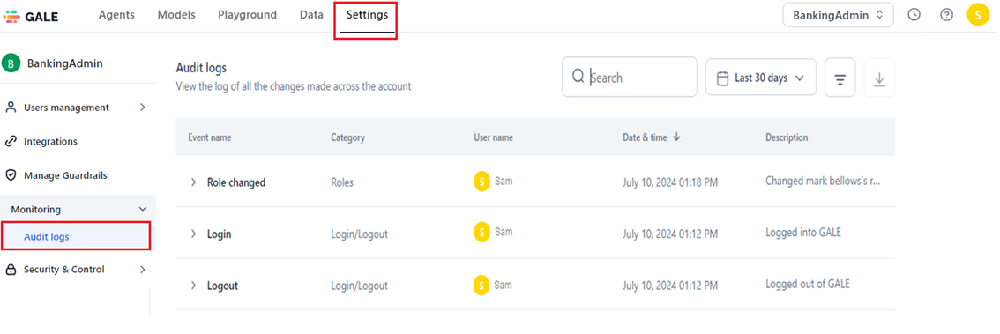
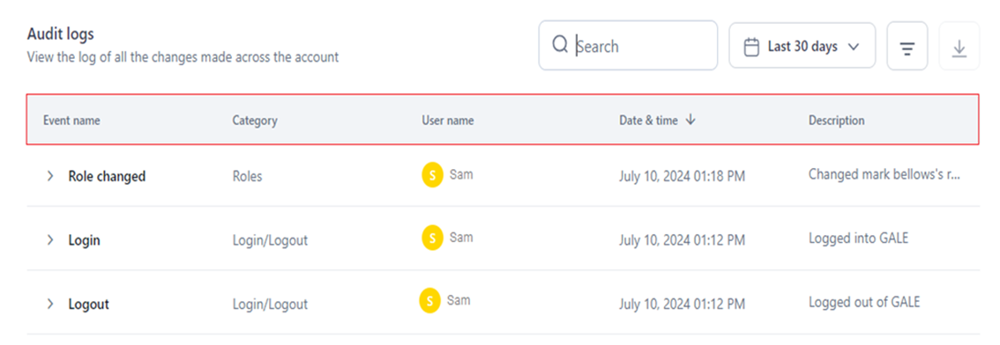
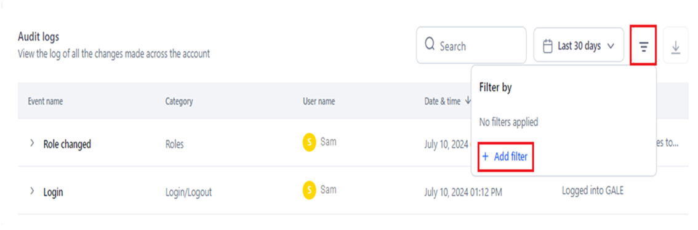
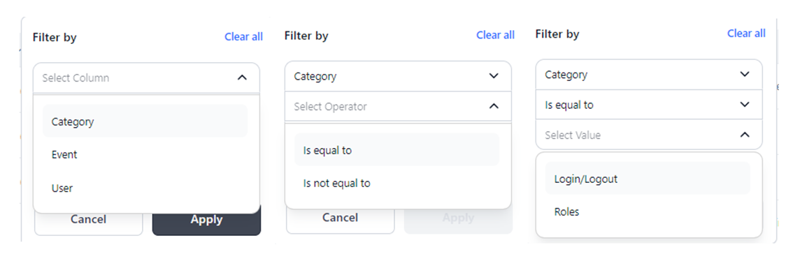
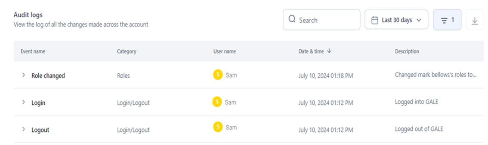
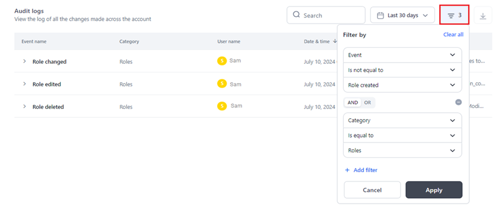
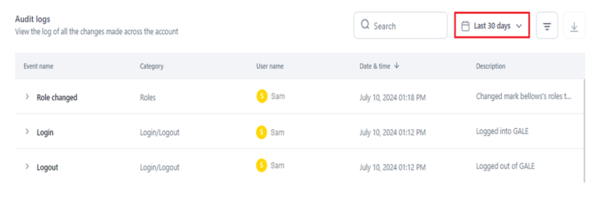
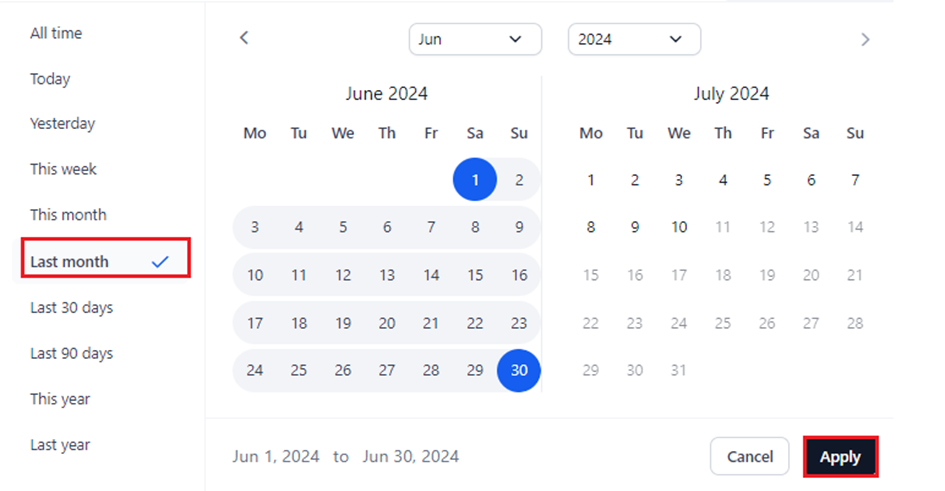

Audit Logs¶
On the Settings console, you can monitor events related to your account's modules and actions taken by the users linked to your account.
Audit Logs offer a comprehensive and time-based view of all the account events. Each log entry includes:
- Event name and category.
- The user who performed the action.
- Date and time of the event.
- Detailed description of the action.
{kind=link}
The event metadata provides business users with actionable insights, helping them in efficiently identifying patterns in user activities within their accounts. It also aids in detecting anomalies, spotting unauthorized usage, and enhancing overall account security.
You can specify a current or past period to view the logs and have complete visibility into the activities and modifications in your account. Learn more.
Additionally, you can set custom filters based on a specific category, event, or user value to view only the required audit logs. Learn more.
Note
- The IP Address is fetched from the user’s current network.
- User ID, Role ID, Model ID, Agent ID, Guardrail ID, Integration ID, and Experiment ID pertain to the unique identifier associated with the module’s entity in the system.
Universal Metadata
The User ID and IP Address are shown for audit log entries across all modules, in addition to module and category specific metadata listed in the tables below.
| Category: Login/Logout | ||
| Metadata: Email ID is displayed for all the category events below. | ||
| Event | Description | Additional Metadata |
| Login | Tracks the account login activity. |
|
| Logout | Tracks the account logout activity. | - |
| Category: Roles | ||
| Metadata: Role ID is displayed for all the category events below, except Role Changed. | ||
| Event | Description | Additional Metadata |
| Role edited | Tracks the edits done to a custom role. | - |
| Role created | Tracks the creation of custom roles. |
|
| Role deleted | Tracks the deletion of custom roles. | |
| Role changed | Tracks the role changes made for member users. This also includes role changes for multiple users (bulk change). | - |
| Category: Integrations | ||
| Metadata: Integration Name, Integration ID, and Integration Type are displayed for all the category events below. | ||
| Event | Description | Additional Metadata |
| Integration added | Tracks integrations added by the user to the account. | - |
| Integration deleted | Tracks integration deletions in the account. | |
| Category: Models | ||
|
Metadata:
|
||
| Event | Description | Additional Metadata |
| Model added(external models only) | Tracks the addition of external models to the account. | - |
| Model deleted | Tracks the deletion of external models from the account. | |
| API Key created | Tracks the creation of an API key for a model in the account. | |
| API Key deleted | Tracks the deletion of an API key for a model by the account user. | |
| Model Finetuning | Tracks the finetuning process for models done by the account user. |
|
| Model deployed | Tracks the open-source model deployments in the account. |
|
| Model undeployed | Tracks the opensource model undeployments in the account. |
|
| Category: Agents | ||
| Metadata: Agent ID and Agent Name are displayed for all the category events below. | ||
| Event | Description | Additional Metadata |
| Agent created | Tracks the creation of an agent in the account. | - |
| Agent deleted | Tracks the deletion of an agent in the account. |
|
| Category: Users Management | ||
| Event | Description | Additional Metadata |
| User invited | Tracks the invitation of new users to the account. |
|
| User deleted | Tracks the deletion of existing users from the account. |
|
| Category: Prompts | ||
|
Metadata:
|
||
| Event | Description | Additional Metadata |
| Prompt created | Tracks the creation of a prompt by the account user. | - |
| Prompt deleted | Tracks the deletion of a prompt by the account user. | |
| Versions committed | Tracks the prompt versions committed by the account user. |
|
| Version Restored | Tracks the prompt version restored by the account user. | |
| Prompt Shared | Tracks the prompts shared by the account user with other users. | - |
| Endpoint Copied | Tracks the prompt endpoint copy done by the account user. | |
| API Key Created | Tracks the API key creation for the prompt endpoint by the account user. | |
| Generated Test Data | Tracks the generation of test data by the account user. |
|
| Generated Prompt | Tracks the prompt generation done by the accout user. | |
| Category: Dataset | ||
| Event | Description | Additional Metadata |
| Dataset uploaded | Tracks the dataset uploads in the account. |
|
| Category: Guardrails | ||
| Metadata: Guardrail Name, Guardrail ID, and Hardware Type are displayed for all the category events below. | ||
| Event | Description | Additional Metadata |
| Guardrails deployed | Tracks the guardrails deployment in the account. | - |
| Guardrails undeployed | Tracks the guardrails undeployment in the account. |
|
Access Audit Logs¶
To access and view audit logs, follow the steps below:
- Sign in to your GALE account.
- Navigate to the Settings console.
- Click Monitoring > Audit Logs on the left navigation menu. 
{kind=link}
Audit Logs Information¶
The Audit Logs Dashboard displays the following information to collectively provide a comprehensive overview of activities within your GALE account:
- Event Name: Describes the specific event or action that occurred.
- Category: Identifies the module or entity affected by the event.
- User Name: Specifies the name of the user who performed the action or triggered the event.
- Date and Time: Represents when the event occurred.
- Description: Provides detailed information about what was done. 
{kind=link}
Filter Audit Logs¶
You can narrow down the information displayed in your account's audit logs by applying custom filters.
These filters allow you to select specific categories, events, or users and then apply operators like Is Equal To or Is Not Equal To to specify the desired value.
This customization helps you focus on relevant audit logs, making it easier to track or investigate specific actions or users within your account.
Steps to Add a Custom Filter¶
- Navigate to the Audit Logs dashboard.
- Click the Filter icon.
-
Click +Add Filter. 
-
In the Filter By window, select the required option from the dropdown list for Select Column, Select Operator, and Enter Value. 
{kind=link}
{kind=link}
Note
When you use "Is Equal To," the audit logs only show entries that match the specified value. Conversely, when you use "Is Not Equal To," the logs display all entries except those that match the specified value.
For example, applying the filter Event Is Equal To Role Created, as shown below, displays only the logs for the role creation event.
{kind=link}
To view the logs for all the events except role creation, you must set the filter as follows:
{kind=link}
- Click Apply.
All the log entries relevant to the applied filter(s) are displayed, as shown below. 
{kind=link}
To clear the filter settings, click Clear All.
{kind=link}
The number of filters you have applied is displayed on the Filter icon. 
{kind=link}
Add Multiple Filters¶
You can enhance your audit log visibility by adding multiple filters. This capability allows you to specify detailed criteria such as specific categories, events, or users, enabling you to obtain fine-grained results.
By combining filters, you can precisely focus on and analyze the audit log entries that are most relevant to your requirements.
When adding multiple filters to refine your audit log queries, you can use the AND or OR operators in multiple filtering steps effectively.
Note
Consistency in operator usage is required for each filtering step. This means you need to use either the AND operator or the OR operator throughout all criteria. Both operators cannot be used together.
{kind=link}
Using the AND operator ensures that all specified conditions must be met for an entry to be included in the results.
On the other hand, using the OR operator broadens the criteria, allowing entries that meet any of the specified conditions to be included. These operators provide flexibility in tailoring your audit log views.
Steps to Add Multiple Filters¶
- Follow Steps 1 to 3 mentioned here.
-
Select the AND/OR operator tab in the Filter by window.
-
Follow Steps 4 to 5 mentioned here.
{kind=link}
The matched log entries are displayed in the dashboard.
Time-based Audit Logs¶
You can view and monitor audit logs within a specific period with the time selection feature. This capability allows you to focus on audit log entries that occurred within a defined time-frame, and track changes.
Time selection is available for past and current time periods, including the ones listed below:
Note
Last 30 Days is the default selection, which displays logs for the past 30 days from the current date.
- All Time: Displays logs since the time the account was created.
- Today: Includes audit logs generated on the current day.
- Yesterday: Includes audit logs generated on the previous day.
- This Week: Displays logs for all the days in the current week.
- This Month: Displays logs for all the days in the current month.
- Last Month: Displays logs for all the days in the previous month.
- Last 30 Days: Displays logs for the past 30 days from the current date, if events’ data exists.
- Last 90 Days: Displays logs for the past 90 days from the current date.
- This Year: Displays logs for all the days in the current year.
- Last Year: Displays logs for all the days in the past year.
Steps to Set Time Range for Audit Logs¶
- Navigate to the Audit Logs dashboard.
-
Click the time selection button (displays Last 30 Days). 
-
Select the required period on the left panel, or select a specific date, month or year on the calendar widget (the current day is the default selection).
- Click Apply. 
{kind=link}
{kind=link}
The audit logs for events that occurred within the selected time period are displayed.
Key Considerations and Tips¶
The time range is automatically selected on the calendar widget once you select the period. Also, the date range is displayed at the bottom of the widget.
{kind=link}
You can select a specific month or year from the relevant dropdown list and switch to different months by clicking the forward/backward arrows.
{kind=link}
To set a specific date as the start date for viewing audit logs, click on the desired date in the widget.
By default, the current day will be set as the end date. This feature allows you to easily customize the period for which you want to monitor and analyze audit logs.
{kind=link}
For more help or information on Audit Logs, contact our technical support team.
Learn more about other features on the Settings Console.